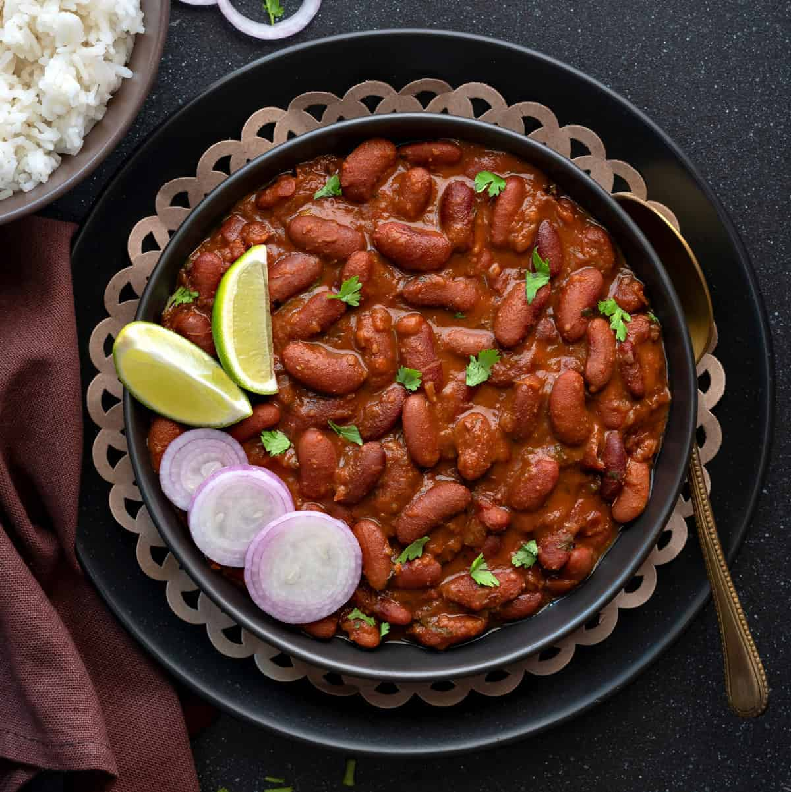

Home
Rajma

A classic dish in Nepali cuisine that consists of beans that are cooked to
perfection, and sauted with a little bit of spices, this dish is best
served with a bowl of rice and maybe garnished with onions.
Ingredients
- Red kidney beans
- Spices: salt, cumin, turmeric,pepper,ginger,
- Onions
- Tomatoes
- Cilantro
Steps
- Put the beans in a pressure cooker
- Add water and cook the beans
- Remove the cooked beans from the cooker and place in a bowl
- Add 2-3 spoons of oil or ghee to a pan
- Add onions and saute till transparent
- Add tomatoes and cook till mushy
- Add 1-2 spoonful of spices depending on the amount of beans
- Cook till the vegtable mixture is mushy and dehydrated
- Add a little bit of the cooked beans
-
Slowly keep adding and incorporating the beans with moderate stirring
and occasionally smash some beans for texture